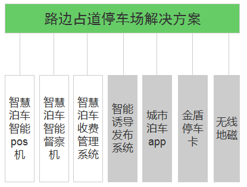
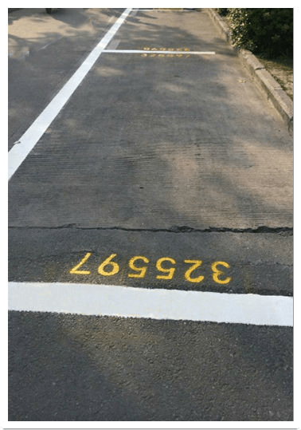
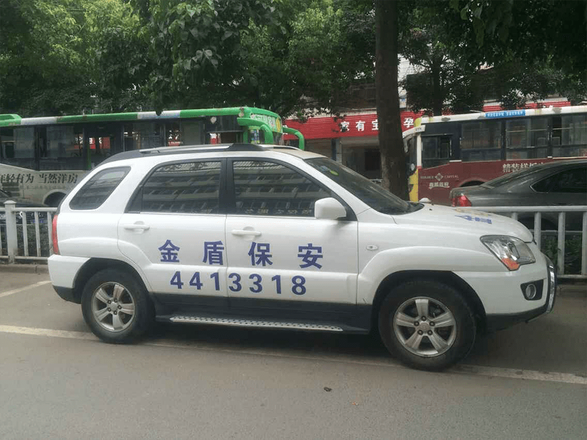
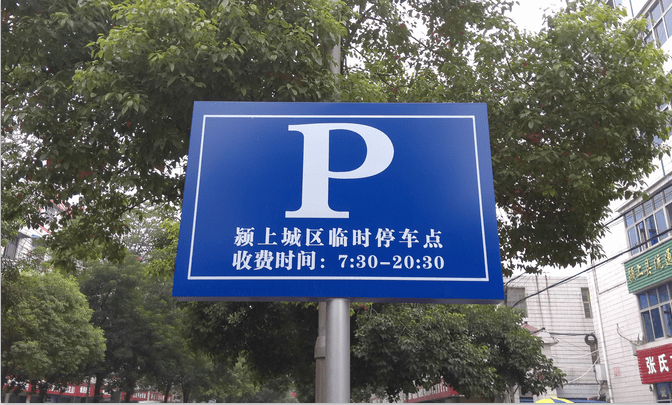
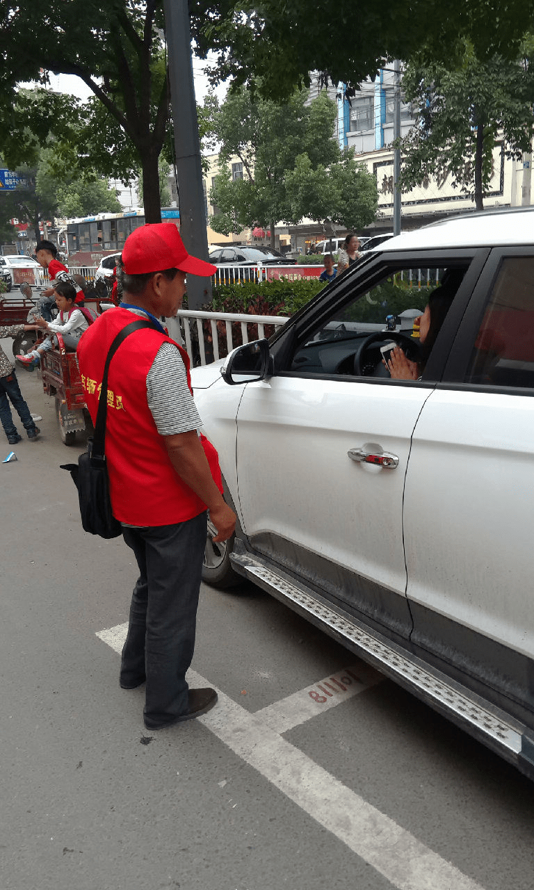
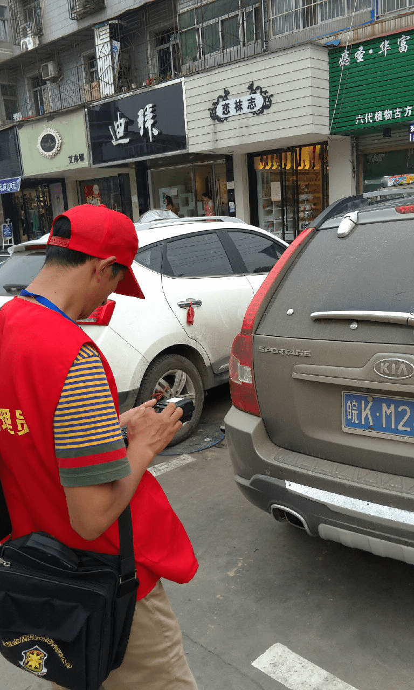

1、方案介绍
系统组成
路边占道停车解决方案包含如下系统:

路边占道停车场解决方案中需要的软硬件设备包含：无线地磁系统、智慧泊车智能pos机、智慧泊车智能督察机、智慧泊车收费管理系统、智能诱导发布系统、城市泊车app、金盾停车卡。
Ø 无线地磁系统：用于检测车位被占情况，通知智慧泊车智能POS机，用于辅助停车收费。
Ø 智慧泊车智能pos机：用于记录车辆驶入、驶出时间，计费，查询停车记录、欠费记录等，打印停车小票，支持在线扎帐（当天收缴的现金通过刷卡的形式上交到公司账户）。使用对象：收费员
Ø 智慧泊车智能督察机：用于督察收费员的收费情况。使用对象：督察员。
Ø 智慧泊车收费管理系统：用于管理基础数据，查看报表。使用对象：公司管理人员。
Ø 智能诱导发布系统：用于显示停车场及空闲停车位数等信息，引导车主停车。面向对象:车主。
Ø 城市泊车app：用于查找停车位，在缴纳、补缴停车费。使用对象：车主。
Ø 金盾停车卡：在POS机上贴卡缴费。使用对象：车主。
2、项目简介
合肥掌韵车聚信息科技有限公司提供业务咨询、系统设计与开发等，成功搭建了颍上县占道停车管理系统，系统包括：智慧泊车智能pos机、智慧泊车智能督察机、智慧泊车收费管理系统、智能诱导发布系统、城市泊车app、停车卡。系统上线之初，对路边的停车位进行了统一规划，喷涂泊位号，设立价格显示牌。并统一了员工服务与服务规范。对收费员进行了业务系统操作的整体培训。
项目于2015年9月系统上线，路边停车更加规范，车主逃费情况大幅减少，公司收益迅速提高。一期项目进展良好，合作愉快，合肥掌韵车聚信息科技有限公司与颍上县金盾保安服务有限公司达成战略合作，即将进行二期项目的建设。扩建了路边停车位，新增了城市诱导屏，并选择部分区域试点无线地磁系统。
建设智慧泊车管理系统，无论是在民生、交通、经济还是社会管理方面都具有重大意义。从民生来说，方便车主停车，疏导交通，缓解停车难、乱停放、停车纠纷和因停车导致的交通拥堵问题。实现了城市停车资源的全面整合，对占道车辆停放进行充分感知，实现精细化管理，提高车位周转率和管理效率，杜绝了欠费与违章占道停车现象。
从经济方面来说，系统上线运营有助于提高大多数停车位的使用率和周转率，极大促进经济收益，同时更好的掌控停车资源，进一步保障了各停车位的综合经济效益，车主一旦未缴或未缴清停车费用，系统自动记录，逃费金额自动累计，系统可查询详细的消费记录和相关照片。可以追查到大量的逃费。智慧泊车管理系统操作方便，提高收费员的收费效率。收费员在停车驶入或停车驶出时，可迅速开展停车收费业务。通过大数据智能分析，可以查看系统自动生成的各类记录和定时生成的各类统计报表，合理分配收费员的工作任务。可以提高收费员工作积极性，带来更多经济效益。更加合理的运用经济杠杆原理，调节停车位的收费新标准。

有编号的路边泊位



